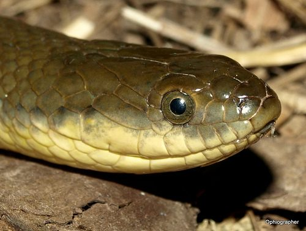

ऑलिव कीलबैकOlive Keelback
Atretium schistosum · Colubridae · REP-0053

- Scientific name वैज्ञानिक नाम
- Atretium schistosum (Daudin, 1803)
- Family कुल
- Colubridae
- Hindi हिंदी
- ऑलिव कीलबैक
- Local names स्थानीय नाम
- olive keelback, olive keelback snake, jal saamp, pani saamp
- Status here यहाँ की स्थिति
- native
- Movement आवागमन
- Resident, here all year
- Known from कहाँ दर्ज
- Others have published records from the Basti–Ayodhya districts बस्ती–अयोध्या के ज़िलों से दूसरों के प्रकाशित अभिलेख
- IUCN IUCN
- not evaluated
- Review समीक्षा
- not yet reviewed
When to look कब देखें
Present all year. साल भर मौजूद।
Tell it apart from इनसे अलग पहचानें
ऑलिव कीलबैक / Olive Keelback
Atretium schistosum (Daudin, 1803) — Colubridae
ऑलिव कीलबैक — यह अवध के ताल-तलैयों, पोखरों और धान के खेतों में पाया जाने वाला एक शांत और विषहीन जलसांप है। इसकी पीठ का रंग एकसमान जैतून जैसा हरा या भूरा होता है जिस पर कोई धब्बे नहीं होते, जबकि पेट और किनारे चमकदार पीले या नारंगी होते हैं। इसकी नाक थूथन के ऊपर होती है जिससे यह पानी की सतह पर तैरते हुए आसानी से सांस ले सकता है। यह मेंढकों और छोटी मछलियों का शिकार करता है।
Quick Identification त्वरित पहचान
| Feature | Description |
|---|---|
| Body size | Moderate-sized semi-aquatic snake; a female of 800 mm in total length (Smith 1943) |
| Dorsal pattern | Uniform olive-green, olive-brown, or leaden grey, entirely lacking dark checkered blotches |
| Ventral coloration | Bright lemon-yellow, pale orange, or rich cream along the belly and lower flanks |
| Nostrils | Slit-like, positioned high on the dorsal surface of the snout for surface breathing |
| Scalation | Midbody scale rows 19; dorsal scales smooth anteriorly, becoming distinctly keeled towards the tail (Smith 1943) |
| Disposition | Inoffensive, docile snake that flattens its body when cornered but rarely attempts to bite |
Field tip: Scan floating mats of aquatic vegetation and submerged weeds in village tanks during warm sunny mornings.
हिंदी: यह एकसमान जैतूनी हरे रंग का जलसांप है जिसका पेट चमकीला पीला होता है। इसकी नाक थूथन के ऊपर होती है और यह पानी में चुपचाप तैरता नजर आता है।
Morphology आकारिकी
Biometrics as given by Smith (1943):
| Measurement | Value | Source |
|---|---|---|
| Total length | 800 mm (female) | Smith (1943) |
| Tail length | 185 mm (same) | Smith (1943) |
The head is narrow, oblong, and slightly distinct from the neck, with an obtuse snout. The eye is moderate with a round pupil, situated somewhat dorsolaterally. The nostril is pierced between two nasals and directed upwards. Internasals are fused or small, often narrowing anteriorly. Supralabials number 8 or 9, with the third and fourth entering the orbit. Midbody scale rows count 19. Scales on the anterior body are smooth or feebly keeled, but develop prominent longitudinal keels on the posterior body and tail (Smith 1943). Ventrals number 129 to 161, and subcaudals range from 53 to 85, all divided.
हिंदी: इसका सिर पतला और थूथन कुंद होती है। आंखें मध्यम आकार की और गोल पुतली वाली होती हैं। शरीर के पिछले हिस्से और पूंछ के शल्कों पर उभरी हुई लकीरें (कील) साफ देखी जा सकती हैं।
Behaviour & Ecology व्यवहार और पारिस्थितिकी
This snake is semi-aquatic and predominantly diurnal, spending most of its active life immersed in slow-moving or stagnant freshwater wetlands, paddy fields, irrigation channels, and lotus ponds. Its upward-directed nostrils allow it to float motionless beneath floating weeds while maintaining continuous respiration. It swims with graceful, undulating strokes and dives into muddy substrate when approached. Unlike the excitable checkered keelback, it exhibits a remarkably placid temperament; if captured, it flattens its body laterally to appear larger and expels foul-smelling anal musk, but almost never strikes or bites.
हिंदी: यह दिन में पानी में सक्रिय रहने वाला बहुत शांत सांप है। यह पानी की सतह पर तैरता रहता है और खतरा होने पर कीचड़ में गोता लगा लेता है। यह इंसानों को कभी नहीं काटता।
Life Cycle / Phenology जीवन चक्र
Reproductive activity takes place primarily during the post-monsoon and early winter months from September to December. Courtship occurs in shallow wetland margins. The species is oviparous; females deposit clutches of 10 to 30 soft-shelled white oval eggs in moist soil, decaying vegetation piles, or rodent holes along tank embankments (Whitaker & Captain 2004). Incubation requires approximately 50 to 70 days depending on ambient temperatures (Whitaker & Captain 2004). Neonates hatch during late winter and early spring, measuring about 150 mm in length, and immediately disperse into shallow nursery ditches.
हिंदी: सर्दियों में इनका प्रजनन होता है। मादा पानी के किनारे नम मिट्टी या सड़ी पत्तियों में 10 से 30 सफेद अंडे देती है। लगभग दो महीने में अंडों से छोटे बच्चे निकलते हैं।
Host Plants or Prey आहार
The diet is strictly carnivorous and specialized for freshwater wetland prey. Major prey items include frogs such as the Skittering Frog (Euphlyctis cyanophlyctis), Asian Grass Frog (Fejervarya limnocharis), and tadpoles. It also feeds on small freshwater fish, water beetles, and freshwater crabs (Barytelphusa). It hunts actively by swimming slowly through weed beds, cornering aquatic prey against submerged vegetation, and swallowing it alive under water.
हिंदी: इसका मुख्य भोजन छोटे मेंढक, टेडपोल (मेंढक के बच्चे), छोटी मछलियां और पानी के कीड़े हैं। यह जलीय पौधों के बीच धीरे-धीरे तैरकर शिकार को पकड़ती है।
Predators / Natural Enemies शत्रु
Common predators in Gangetic wetlands include large aquatic birds such as the Black Kite (Milvus migrans), grey herons, and egrets. Semi-aquatic predators such as the Checkered Keelback (Fowlea piscator) frequently attack juvenile olive keelbacks. Carnivorous mammals like the smooth-coated otter (Lutrogale perspicillata) and golden jackal (Canis aureus) also prey upon water snakes in drying marshes.
हिंदी: बगुले, चील और जलपक्षी पानी की सतह पर तैरते इस सांप को झपट लेते हैं। बड़ा पनिहा सांप और नेवला भी इसका शिकार करते हैं।
Agricultural / Human Relevance कृषि प्रासंगिकता
In the rice-growing agro-ecosystems of Awadh, this water snake is an entirely harmless, beneficial element of the wetland biodiversity. It consumes destructive agricultural pest insects, tadpoles, and crab larvae that undermine paddy bunds. Because it lacks any venom, it poses absolutely no danger to farmers, rice-transplanters, or village bathers. Unfortunately, it is often confused with venomous species and killed indiscriminately when caught in fishing nets. It is protected under the Wildlife (Protection) Act 1972.
हिंदी: धान के खेतों में यह किसानों की मददगार है और मेड़ों को नुकसान पहुंचाने वाले जलीय कीड़ों को खाती है। यह पूरी तरह विषहीन है और इससे किसी को कोई खतरा नहीं है।
Expected Locally स्थानीय रूप से अपेक्षित
Not a field record. Written from published accounts for eastern Uttar Pradesh. No confirmed local sighting yet — if you have seen it, that is what the atlas needs.
अभी तक स्थानीय पुष्टि नहीं। यह विवरण प्रकाशित स्रोतों से है, किसी अवलोकन से नहीं।
In Basti and Ayodhya districts, optimal search localities include weed-rich village tanks, lotus ponds (kamal talab), flooded paddy fields during the kharif season, and oxbow marshes along the Kuwana and Manorama rivers. Morning surveys along water hyacinth margins from July to November offer the highest observation potential. GBIF holds published records from these districts. A first confirmed record must be documented with a clear photograph showing the uniform unpatterned olive dorsum and bright yellow belly submitted through the atlas platform.
Distribution वितरण
Global range: Widespread across South Asia, occurring throughout India, Sri Lanka, and Bangladesh.
In India: Distributed through peninsular India, the Western Ghats, central states, and the northern Gangetic plain eastward to Bengal.
In Uttar Pradesh: Recorded from diverse wetland complexes and river valleys across central and eastern districts.
In Basti district / eastern UP: Expected in perennial village tanks, oxbow marshes, and flooded paddy tracts throughout the Kuwana and Ghaghara catchments.
हिंदी: यह पूरे भारत, श्रीलंका और बांग्लादेश के मीठे पानी के तालों में पाई जाती है। उत्तर प्रदेश के कछारी क्षेत्रों और धान के इलाकों में इसका वितरण दर्ज है।
Research Questions शोध प्रश्न
- How do pesticide runoffs in kharif paddy fields affect amphibian prey abundance and snake body condition? / धान के खेतों में कीटनाशकों के बहाव से मेंढकों की संख्या और इस सांप के स्वास्थ्य पर क्या असर पड़ता है?
- What are the key microhabitat variables governing olive keelback presence versus Checkered Keelback in rural village tanks? / गांव के तालाबों में पनिहा सांप और ऑलिव कीलबैक के रहने के स्थानों में क्या मुख्य अंतर होता है?
- What is the extent of incidental drowning mortality in commercial monofilament gill nets during winter fishing?
- How does the removal of native emergent vegetation in commercial fisheries alter foraging success?
- Can farmer education programs reduce unnecessary killings of harmless water snakes in paddy wetlands? / क्या किसानों को जागरूक करके धान के खेतों में इस हानिरहित जलसांप को मारे जाने से बचाया जा सकता है?
Similar Species मिलती-जुलती प्रजातियाँ
| Species | How to tell apart | हिंदी | |
|---|---|---|---|
| Checkered Keelback \ | Fowlea piscator | Dorsum has bold black-and-olive checkered blotches, two dark streaks behind eye, and aggressive striking disposition (Smith 1943) | पनिहा सांप की पीठ पर चौकोर काले धब्बे होते हैं, आंख के पीछे दो काली धारियां होती हैं और यह काटने को दौड़ता है |
| Buff-striped Keelback \ | Amphiesma stolatum | Terrestrial keelback with two prominent pale yellow longitudinal stripes running down the back and black crossbars | बफ-स्ट्राइप्ड कीलबैक जमीन पर रहता है और इसकी पीठ पर दो साफ पीली समानांतर धारियां होती हैं |
| Green Keelback \ | Rhabdophis plumbicolor | Heavy-bodied terrestrial snake with uniform bright grass-green coloration, heavily keeled scales, and chevron neck collar in young | ग्रीन कीलबैक का शरीर मोटा और चमकीला घास जैसा हरा होता है और यह जमीन पर रहता है |
Field rule: Slender, docile water snake with uniform olive-green unspotted back, bright lemon-yellow belly, and upward-directed nostrils in village ponds.
हिंदी: बिना किसी धब्बे वाली जैतूनी पीठ और चमकीले पीले पेट वाला अत्यंत शांत और विषहीन जलसांप।
Taxonomy & Classification वर्गीकरण
Original description. Daudin (1803), Histoire Naturelle, Générale et Particulière des Reptiles, vol. 7, p. 132; type locality: India.
Subspecies. Monotypic; no subspecies are currently recognized across its continental distribution.
Family and order placement. Placed in the genus Atretium Cope, 1861, family Colubridae (subfamily Natricinae), order Squamata.
Phylogenetic notes. Highly specialized semi-aquatic lineage within the Natricinae, adapted morphologically for surface floating and amphibious predation.
IUCN status rationale. Not evaluated by the IUCN Red List; widely distributed and common in healthy freshwater wetland habitats across South Asia.
हिंदी: फ्रांसीसी जीवविज्ञानी दाउदिन ने 1803 में इसका वैज्ञानिक विवरण दिया था। यह कोलुब्रिडे कुल के नाट्रिसिने उपकुल का सदस्य है।
Photo Gallery फोटो गैलरी
No photos yet — add field photos to media/species/olive_keelback/ and run node scripts/sync_photos.js.
Photos needed आवश्यक फोटो
- [ ] Habitat view showing typical local microhabitat (प्राकृतिक वास का विस्तृत परिदृश्य)
- [ ] Dorsal view showing uniform unpatterned olive-green coloration (पीठ के एकसमान जैतूनी हरे रंग का दृश्य)
- [ ] Lateral view showing bright yellow belly and upward-directed nostrils (चमकीले पीले पेट और ऊपर स्थित नाक का दृश्य)
- [ ] Individual swimming among floating water weeds (जलीय पौधों के बीच तैरता सांप)
References संदर्भ
- Original description: Daudin, 1803 — see GBIF.
- Smith, M. A. (1943). The Fauna of British India, Ceylon and Burma, Including the Whole of the Indo-Chinese Sub-region. Reptilia and Amphibia. Vol. III.—Serpentes. Taylor and Francis, London.
- Whitaker, R. & Captain, A. (2004). Snakes of India: The Field Guide. Draco Books, Chengalpattu.
- GBIF Occurrence Data — Atretium schistosum, India (2025).
Source file: species/fauna/reptiles/olive_keelback.md